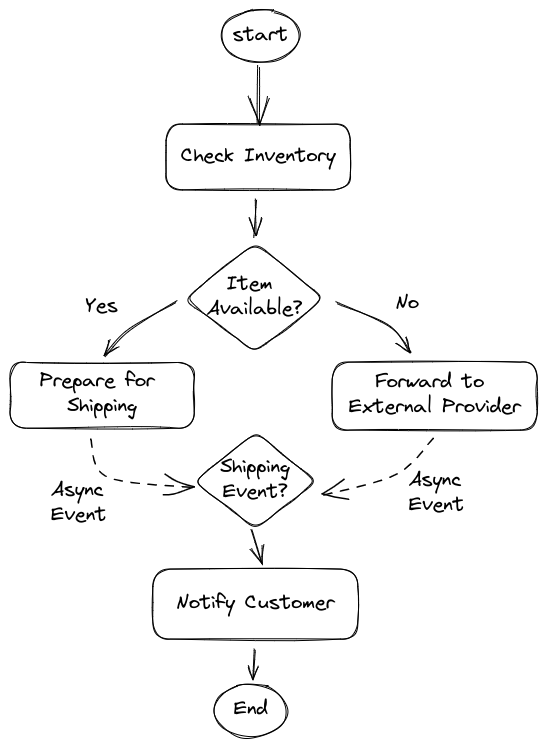
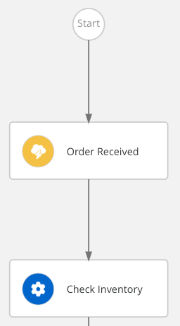
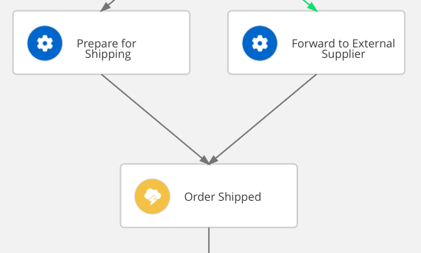
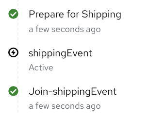
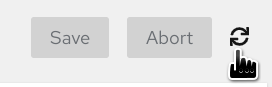

Long Running Workflows
Having a graphical notation to orchestrate services is nice, but you might wonder if it is worth it!
The real power of a workflow engine gets into action when the workflow is long running: in other words, when it reaches a pause status, because it has to wait an asynchronous event, a manual intervention or a timer.
In this section, you will evolve the workflow to add this long running nature!
From a use case perspective, the workflow has to wait for an asynchronous event which confirms the completion shipment procedures.
The following picture shows an high level design:

Wait Event Sprint
For sake of simplicity, let’s imagine that an external integration service is able to homogenize events arriving from the internal department and those arriving from the external supplier.
The event will bring an important information the correlation key, in our use case is the orderId.
As the name implies, the correlation key is important to address the correct workflow instance.
The correlation key MUST BE initialized at creation time with an incoming CloudEvent.
This implies two catching event nodes are required:
-
one at the beginning of the flow to start the workflow
-
another after the
Prepare for ShippingandForward to External Supplierto wait the shipping event
-
Define the event types
"events": [ { "name": "orderEvent", "kind": "consumed", "type": "OrderEventType", "source": "Client", "correlation": [ { "contextAttributeName": "orderid" } ] }, { "name": "shippingEvent", "kind": "consumed", "type": "ShippingEventType", "source": "Shipper", "correlation": [ { "contextAttributeName": "orderid" } ] } ],The definition is quite self explanatory: the workflow can consume two different types of events:
OrderEventTypeandShippingEventType, from two different sources. One important aspect is the correlation definition which says that CloudEvent has to carry a special attribute in the header namedorderid(CloudEvents attributes are lowercase). -
Add an event node after the start node
{ "name": "Order Received", "type": "event", "onEvents": [ { "eventRefs": [ "orderEvent" ] } ], "transition": "Check Inventory" } -
Update the start attribute to match the event state
Order Received, this is the graphical outcome: -
Add another event state at the end:
-
name:
Order Shipped -
eventRef:
shippingEvent
-
-
Update
Prepare for ShippingandForward to External Supplierto transition inOrder Shippedevent node -
To complete the use case implementation, you have to add another operation that is responsible of notifying the customer about the shipping status with usual tracking information:
-
copy the previous operation state
Prepare for Shipping -
rename it to
Notify Customer -
update the message to match the operation name
-
remove the existing transition and add the attribute
"end": true
-
-
Update the previous
Order Shippedevent state adding the transition toNotify Customer
|
You can compare your resulting workflow with the expected solution at this stage in |
Eventing
Events in Serverless Workflow comply to the CloudEvents standard which is under the Cloud Native Computing Foundation.
Moreover, Serverless Workflow, and in general OpenShift Serverless Logic, aims to fit seamlessly in Knative eventing.
For such a reason, Serverless Workflow exposes two channels to ingest CloudEvents:
-
HTTP POST
-
Kafka Broker
The developer runtime listens for CloudEvents on the root path of the standard HTTP channel (e.g. http:/localhost:8080/).
In general, the Serverless Workflow runtime can expose multiple endpoints to ingest different types of events.
Test the events
To start the workflow and subsequently advance it, you have to inject two types of CloudEvent:
-
OrderEventType -
ShippingEventType
Inside the http probing file, there are already 3 examples of CloudEvents, for the current test we only need the first two.
-
Open
src/test/resources/probe.httpand identify the first POST statement after the comment Start order workflow through CloudEvent-
Observe the feature of the http request: along with the usual HTTP Headers, there are some distinctive attributes of the CloudEvents specification, they all starts with the
ce-prefix and are lowercase. -
A special attention deserves the custom attribute
orderidwhich matches thecontextAttributeNameused in the event definition for correlation.{{orderId}}is a convenient capability of this rest client that allows the variable defined earlier (@orderId=1000) to be used in this way. -
Within the json payload, there is again an attribute named
orderId, it’s required because the CloudEvents attributes are not accessible from the workflow logic.
-
-
Start the order workflow injecting the
OrderEventTypeclicking onSend Request -
Check the flow execution through the DevUI. Refer to Monitor the runtime section for detailed guidance. Make sure that the workflow instance is still running. You should notice the
shippingEventis active after thePrepare for Shippingoperation.
-
Inject the
ShippingEventTypeto make the flow advance: clickSend Requeston the POST statement right after the previous one (pay attention to the comment). -
To check the workflow instance completion, go in the DevUI, on the top right of the workflow instance page, click the refresh icon:

CONGRATULATION!!! Your Serverless Workflow resumes when asynchronous events arrives!
The ce-orderid attribute is the hook to the workflow instance, you can run multiple parallel workflow instances which will wait the corresponding events.
|